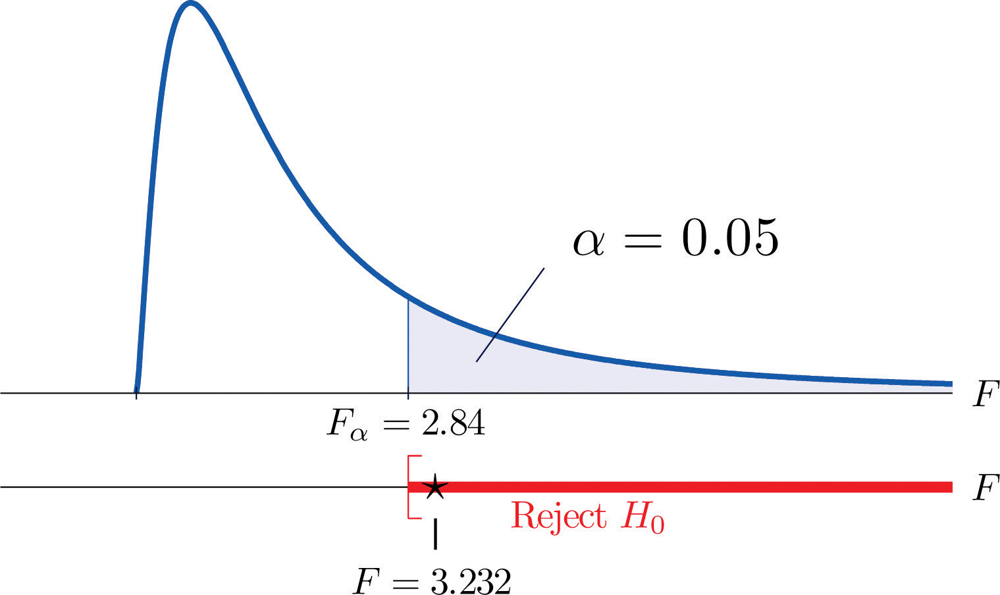
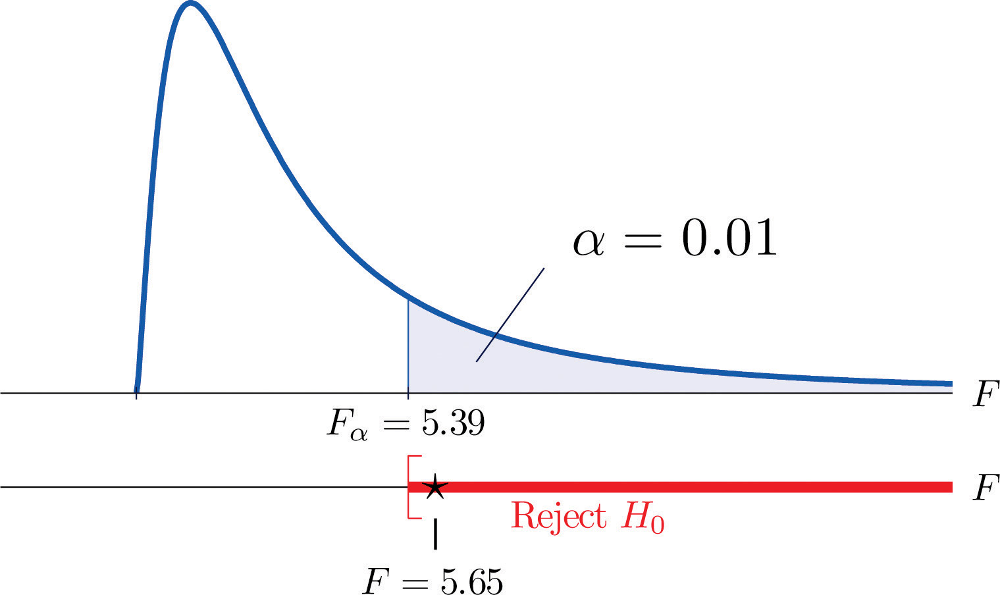

In Chapter 9 "Two-Sample Problems" we saw how to compare two population means and In this section we will learn to compare three or more population means at the same time, which is often of interest in practical applications. For example, an administrator at a university may be interested in knowing whether student grade point averages are the same for different majors. In another example, an oncologist may be interested in knowing whether patients with the same type of cancer have the same average survival times under several different competing cancer treatments.
In general, suppose there are K normal populations with possibly different means, , but all with the same variance The study question is whether all the K population means are the same. We formulate this question as the test of hypotheses
To perform the test K independent random samples are taken from the K normal populations. The K sample means, the K sample variances, and the K sample sizes are summarized in the table:
| Population | Sample Size | Sample Mean | Sample Variance |
|---|---|---|---|
| 1 | |||
| 2 | |||
| ⋮ | ⋮ | ⋮ | ⋮ |
| K |
Define the following quantities:
The combined sample size:
The mean of the combined sample of all n observations:
The mean square for treatment:
The mean square for error:
MSTMean square for treatment. can be thought of as the variance between the K individual independent random samples and MSEMean square for error. as the variance within the samples. This is the reason for the name “analysis of variance,” universally abbreviated ANOVAAnalysis of variance.. The adjective “one-way” has to do with the fact that the sampling scheme is the simplest possible, that of taking one random sample from each population under consideration. If the means of the K populations are all the same then the two quantities MST and MSE should be close to the same, so the null hypothesis will be rejected if the ratio of these two quantities is significantly greater than 1. This yields the following test statistic and methods and conditions for its use.
If the K populations are normally distributed with a common variance and if is true then under independent random sampling F approximately follows an F-distribution with degrees of freedom and
The test is right-tailed: H0 is rejected at level of significance if
As always the test is performed using the usual five-step procedure.
The average of grade point averages (GPAs) of college courses in a specific major is a measure of difficulty of the major. An educator wishes to conduct a study to find out whether the difficulty levels of different majors are the same. For such a study, a random sample of major grade point averages (GPA) of 11 graduating seniors at a large university is selected for each of the four majors mathematics, English, education, and biology. The data are given in Table 11.17 "Difficulty Levels of College Majors". Test, at the 5% level of significance, whether the data contain sufficient evidence to conclude that there are differences among the average major GPAs of these four majors.
Table 11.17 Difficulty Levels of College Majors
| Mathematics | English | Education | Biology |
|---|---|---|---|
| 2.59 | 3.64 | 4.00 | 2.78 |
| 3.13 | 3.19 | 3.59 | 3.51 |
| 2.97 | 3.15 | 2.80 | 2.65 |
| 2.50 | 3.78 | 2.39 | 3.16 |
| 2.53 | 3.03 | 3.47 | 2.94 |
| 3.29 | 2.61 | 3.59 | 2.32 |
| 2.53 | 3.20 | 3.74 | 2.58 |
| 3.17 | 3.30 | 3.77 | 3.21 |
| 2.70 | 3.54 | 3.13 | 3.23 |
| 3.88 | 3.25 | 3.00 | 3.57 |
| 2.64 | 4.00 | 3.47 | 3.22 |
Solution:
Step 1. The test of hypotheses is
Step 3. If we index the population of mathematics majors by 1, English majors by 2, education majors by 3, and biology majors by 4, then the sample sizes, sample means, and sample variances of the four samples in Table 11.17 "Difficulty Levels of College Majors" are summarized (after rounding for simplicity) by:
| Major | Sample Size | Sample Mean | Sample Variance |
|---|---|---|---|
| Mathematics | |||
| English | |||
| Education | |||
| Biology |
The average of all 44 observations is (after rounding for simplicity) We compute (rounding for simplicity)
and
so that
Figure 11.12 Note 11.36 "Example 8" Rejection Region
A research laboratory developed two treatments which are believed to have the potential of prolonging the survival times of patients with an acute form of thymic leukemia. To evaluate the potential treatment effects 33 laboratory mice with thymic leukemia were randomly divided into three groups. One group received Treatment 1, one received Treatment 2, and the third was observed as a control group. The survival times of these mice are given in Table 11.18 "Mice Survival Times in Days". Test, at the 1% level of significance, whether these data provide sufficient evidence to confirm the belief that at least one of the two treatments affects the average survival time of mice with thymic leukemia.
Table 11.18 Mice Survival Times in Days
| Treatment 1 | Treatment 2 | Control | |
|---|---|---|---|
| 71 | 75 | 77 | 81 |
| 72 | 73 | 67 | 79 |
| 75 | 72 | 79 | 73 |
| 80 | 65 | 78 | 71 |
| 60 | 63 | 81 | 75 |
| 65 | 69 | 72 | 84 |
| 63 | 64 | 71 | 77 |
| 78 | 71 | 84 | 67 |
| 91 | |||
Solution:
Step 1. The test of hypotheses is
Step 3. If we index the population of mice receiving Treatment 1 by 1, Treatment 2 by 2, and no treatment by 3, then the sample sizes, sample means, and sample variances of the three samples in Table 11.18 "Mice Survival Times in Days" are summarized (after rounding for simplicity) by:
| Group | Sample Size | Sample Mean | Sample Variance |
|---|---|---|---|
| Treatment 1 | |||
| Treatment 2 | |||
| Control |
The average of all 33 observations is (after rounding for simplicity) We compute (rounding for simplicity)
and
so that
Figure 11.13 Note 11.37 "Example 9" Rejection Region
It is important to to note that, if the null hypothesis of equal population means is rejected, the statistical implication is that not all population means are equal. It does not however tell which population mean is different from which. The inference about where the suggested difference lies is most frequently made by a follow-up study.
The following three random samples are taken from three normal populations with respective means , , and , and the same variance
| Sample 1 | Sample 2 | Sample 3 |
|---|---|---|
| 2 | 3 | 0 |
| 2 | 5 | 1 |
| 3 | 7 | 2 |
| 5 | 1 | |
| 3 |
The following three random samples are taken from three normal populations with respective means , , and , and a same variance
| Sample 1 | Sample 2 | Sample 3 |
|---|---|---|
| 0.0 | 1.3 | 0.2 |
| 0.1 | 1.5 | 0.2 |
| 0.2 | 1.7 | 0.3 |
| 0.1 | 0.5 | |
| 0.0 |
Refer to Exercise 1.
At , test hypotheses
Refer to Exercise 2.
At , test hypotheses
The Mozart effect refers to a boost of average performance on tests for elementary school students if the students listen to Mozart’s chamber music for a period of time immediately before the test. In order to attempt to test whether the Mozart effect actually exists, an elementary school teacher conducted an experiment by dividing her third-grade class of 15 students into three groups of 5. The first group was given an end-of-grade test without music; the second group listened to Mozart’s chamber music for 10 minutes; and the third groups listened to Mozart’s chamber music for 20 minutes before the test. The scores of the 15 students are given below:
| Group 1 | Group 2 | Group 3 |
|---|---|---|
| 80 | 79 | 73 |
| 63 | 73 | 82 |
| 74 | 74 | 79 |
| 71 | 77 | 82 |
| 70 | 81 | 84 |
Using the ANOVA F-testa test based on an F statistic to check whether several population means are equal. at , is there sufficient evidence in the data to suggest that the Mozart effect exists?
The Mozart effect refers to a boost of average performance on tests for elementary school students if the students listen to Mozart’s chamber music for a period of time immediately before the test. Many educators believe that such an effect is not necessarily due to Mozart’s music per se but rather a relaxation period before the test. To support this belief, an elementary school teacher conducted an experiment by dividing her third-grade class of 15 students into three groups of 5. Students in the first group were asked to give themselves a self-administered facial massage; students in the second group listened to Mozart’s chamber music for 15 minutes; students in the third group listened to Schubert’s chamber music for 15 minutes before the test. The scores of the 15 students are given below:
| Group 1 | Group 2 | Group 3 |
|---|---|---|
| 79 | 82 | 80 |
| 81 | 84 | 81 |
| 80 | 86 | 71 |
| 89 | 91 | 90 |
| 86 | 82 | 86 |
Test, using the ANOVA F-test at the 10% level of significance, whether the data provide sufficient evidence to conclude that any of the three relaxation method does better than the others.
Precision weighing devices are sensitive to environmental conditions. Temperature and humidity in a laboratory room where such a device is installed are tightly controlled to ensure high precision in weighing. A newly designed weighing device is claimed to be more robust against small variations of temperature and humidity. To verify such a claim, a laboratory tests the new device under four settings of temperature-humidity conditions. First, two levels of high and low temperature and two levels of high and low humidity are identified. Let T stand for temperature and H for humidity. The four experimental settings are defined and noted as (T, H): (high, high), (high, low), (low, high), and (low, low). A pre-calibrated standard weight of 1 kg was weighed by the new device four times in each setting. The results in terms of error (in micrograms mcg) are given below:
| (high, high) | (high, low) | (low, high) | (low, low) |
|---|---|---|---|
| −1.50 | 11.47 | −14.29 | 5.54 |
| −6.73 | 9.28 | −18.11 | 10.34 |
| 11.69 | 5.58 | −11.16 | 15.23 |
| −5.72 | 10.80 | −10.41 | −5.69 |
Test, using the ANOVA F-test at the 1% level of significance, whether the data provide sufficient evidence to conclude that the mean weight readings by the newly designed device vary among the four settings.
To investigate the real cost of owning different makes and models of new automobiles, a consumer protection agency followed 16 owners of new vehicles of four popular makes and models, call them , , , and , and kept a record of each of the owner’s real cost in dollars for the first five years. The five-year costs of the 16 car owners are given below:
| TC | HA | NA | FT |
|---|---|---|---|
| 8423 | 7776 | 8907 | 10333 |
| 7889 | 7211 | 9077 | 9217 |
| 8665 | 6870 | 8732 | 10540 |
| 7129 | 9747 | ||
| 7359 | 8677 |
Test, using the ANOVA F-test at the 5% level of significance, whether the data provide sufficient evidence to conclude that there are differences among the mean real costs of ownership for these four models.
Helping people to lose weight has become a huge industry in the United States, with annual revenue in the hundreds of billion dollars. Recently each of the three market-leading weight reducing programs claimed to be the most effective. A consumer research company recruited 33 people who wished to lose weight and sent them to the three leading programs. After six months their weight losses were recorded. The results are summarized below:
| Statistic | Prog. 1 | Prog. 2 | Prog. 3 |
|---|---|---|---|
| Sample Mean | |||
| Sample Variance | |||
| Sample Size |
The mean weight loss of the combined sample of all 33 people was Test, using the ANOVA F-test at the 5% level of significance, whether the data provide sufficient evidence to conclude that some program is more effective than the others.
A leading pharmaceutical company in the disposable contact lenses market has always taken for granted that the sales of certain peripheral products such as contact lens solutions would automatically go with the established brands. The long-standing culture in the company has been that lens solutions would not make a significant difference in user experience. Recent market research surveys, however, suggest otherwise. To gain a better understanding of the effects of contact lens solutions on user experience, the company conducted a comparative study in which 63 contact lens users were randomly divided into three groups, each of which received one of three top selling lens solutions on the market, including one of the company’s own. After using the assigned solution for two weeks, each participant was asked to rate the solution on the scale of 1 to 5 for satisfaction, with 5 being the highest level of satisfaction. The results of the study are summarized below:
| Statistics | Sol. 1 | Sol. 2 | Sol. 3 |
|---|---|---|---|
| Sample Mean | |||
| Sample Variance | |||
| Sample Size |
The mean satisfaction level of the combined sample of all 63 participants was Test, using the ANOVA F-test at the 5% level of significance, whether the data provide sufficient evidence to conclude that not all three average satisfaction levels are the same.
Large Data Set 9 records the costs of materials (textbook, solution manual, laboratory fees, and so on) in each of ten different courses in each of three different subjects, chemistry, computer science, and mathematics. Test, at the 1% level of significance, whether the data provide sufficient evidence to conclude that the mean costs in the three disciplines are not all the same.
http://www.gone.2012books.lardbucket.org/sites/all/files/data9.xls
F = 3.9647, , reject H0
F = 9.6018, , reject H0
F = 0.3589, , do not reject H0
F = 1.418. and Rejection Region: Decision: Fail to reject H0 of equal means.